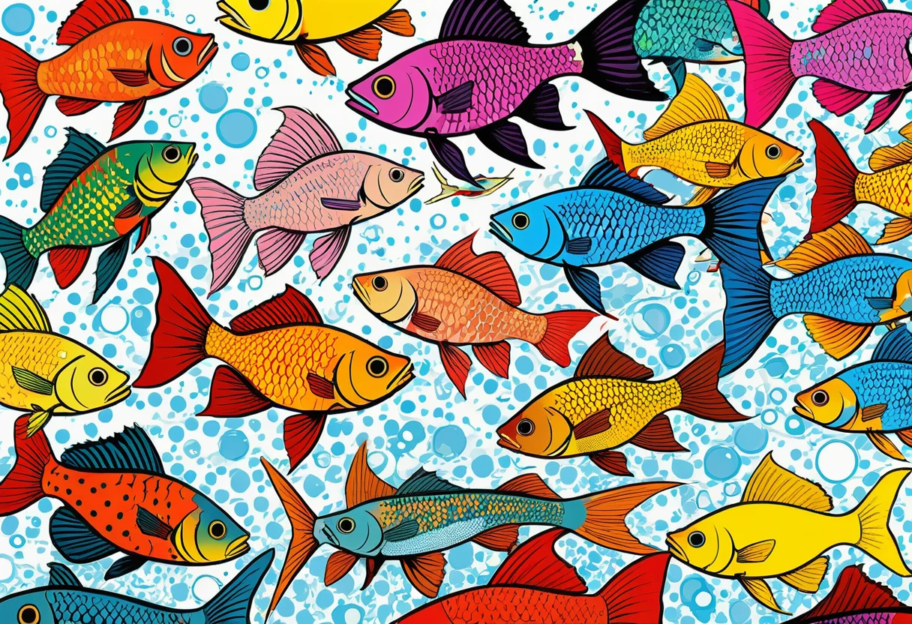
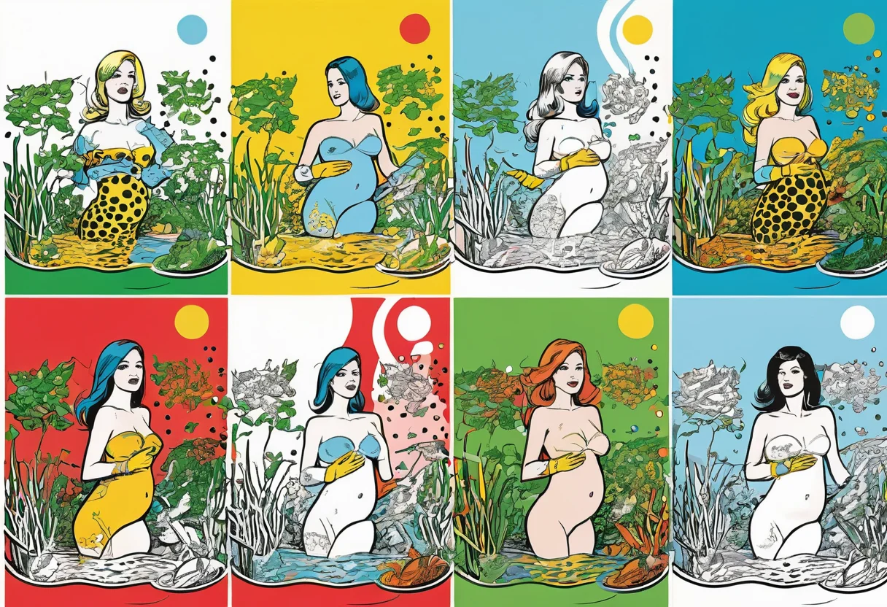

Lebendgebärende Zahnkarpfen – Guppys, Platys, Schwertträger und ihre Verwandten
Lebendgebärende Zahnkarpfen (Poeciliidae) gehören zu den beliebtesten Aquarienfischen überhaupt. Guppys, Platys, Schwertträger und Mollys sind farbenfroh, pflegeleicht und vermehren sich im gut eingerichteten Aquarium fast von alleine. Ihr besonderes Merkmal ist die Lebendgeburt: Anders als die meisten Fische legen sie keine Eier, sondern bringen fertig entwickelte Jungfische zur Welt. In diesem Artikel erfährst du alles über die Haltung, Pflege und Nachzucht dieser faszinierenden Fischgruppe.
Die Familie der Lebendgebärenden Zahnkarpfen
Die Familie Poeciliidae umfasst mehr als 300 Arten, von denen etwa ein Dutzend regelmäßig in der Aquaristik gepflegt werden. Ihr natürliches Verbreitungsgebiet erstreckt sich vom Süden Nordamerikas über Mittelamerika bis nach Südamerika. Sie besiedeln dort eine Vielzahl von Lebensräumen – von klaren Bächen über trübe Tümpel bis zu Brackwassermündungen.
Das gemeinsame Merkmal aller Poeciliiden ist die Befruchtung im Körper des Weibchens. Das Männchen besitzt ein spezielles Begattungsorgan, das Gonopodium, das aus der Afterflosse umgebildet ist. Nach der Paarung können die Weibchen die Spermien über Monate speichern und mehrere Würfe hintereinander ohne erneute Paarung austragen. Dieses Verhalten macht die Nachzucht besonders einfach.
Die Jungfische werden als vollständig entwickelte Mini-Ausgaben der Erwachsenen geboren. Sie sind sofort eigenständig, suchen aktiv nach Futter und verstecken sich im Pflanzengewirr vor Fressfeinden – einschließlich ihrer eigenen Eltern.


Guppys – Die Klassiker der Aquaristik
Guppys (Poecilia reticulata) sind wohl die bekanntesten Süßwasserzierfische überhaupt. Sie sind extrem anpassungsfähig, farbenfroh und vermehren sich unter nahezu allen Bedingungen. Guppys haben die Aquaristik revolutioniert, weil sie auch Anfängern schnell Erfolgserlebnisse vermitteln. Männliche Guppys werden nur 2–4 cm groß, dafür aber mit spektakulären Schwanz- und Rückenflossen in allen Farben und Formen – von einfarbig bis mehrfarbig, gefächert, lyraförmig oder schleierartig.
Haltung und Wasserwerte
Guppys fühlen sich bei Temperaturen von 22–28 °C und einem pH-Wert von 7,0–8,0 wohl. Sie sind Härte-unempfindlich und kommen mit GH 10–30 °dGH klar. Die Wasserqualität sollte gut sein, aber Guppys verzeihen auch mal kleinere Pflegefehler. Das Becken sollte ab 60 cm Länge (60 Liter) für eine gemischte Gruppe von 5–8 Tieren dimensioniert sein. Eine gute Bepflanzung mit feinfiedrigen Pflanzen (Java-Moos, Hornkraut) bietet Schutz für den Nachwuchs.
Vergesellschaftung
Guppys sind friedlich und eignen sich für die meisten Gesellschaftsbecken. Achtung: Fische, die an den langen Flossen der Männchen zupfen (Sumatrabarben, manche Buntbarsche), sind keine guten Beckenpartner. Gut kombinieren lassen sich Guppys mit Platys, Schwertträgern, Panzerwelsen, Otocinclus und kleinen Salmlern. Das optimale Geschlechterverhältnis ist 2–3 Weibchen pro Männchen – das schützt die Weibchen vor dauerhafter Belästigung.
Zucht
Die Zucht von Guppys ist so einfach, dass sie oft ungewollt passiert. Bei Temperaturen um 25 °C beträgt die Tragzeit 22–28 Tage. Ein Weibchen bringt 10–60 Jungfische zur Welt, die sofort nach Futter suchen. Die Jungtiere können mit feinem Staubfutter, Artemia-Nauplien oder zerriebenem Flockenfutter gefüttert werden. Für eine kontrollierte Zucht setzt du trächtige Weibchen in ein Ablaichbecken mit feinfiedrigen Pflanzen oder einem Laichmopp – die Jungen verstecken sich dort und werden nicht von den Erwachsenen gefressen.
Platys – Die farbenfrohen Allrounder
Platys (Xiphophorus maculatus) sind die idealen Anfängerfische: robust, aktiv und in einer enormen Farbvielfalt erhältlich. Sie werden etwa 4–6 cm groß und sind kompakte, hochrückige Fische. Die Zuchtform ist weit verbreitet, aber auch die Wildform mit ihrer dezenten Zeichnung hat ihren Reiz. Platys sind tagaktiv, schwimmen in der mittleren bis oberen Wasserzone und zeigen ein interessantes Sozialverhalten.
Haltung
Platys sind genügsam: Temperaturen von 22–26 °C, pH 7,0–8,0 und eine gute Bepflanzung reichen ihnen völlig aus. Sie sind sehr friedlich und sollten in Gruppen von 4–6 Tieren gehalten werden (2–3 Weibchen pro Männchen). Platys brauchen kein allzu großes Becken – ab 60 cm Länge sind sie zufrieden.
Ernährung
Platys sind Allesfresser mit einer Vorliebe für pflanzliche Kost. Hochwertiges Flockenfutter, Granulat und pflanzliche Tabletten sollten die Basis sein. Ergänzend freuen sie sich über überbrühte Gemüsestücke (Zucchini, Gurke, Salat), Frostfutter und gelegentlich Lebendfutter. Eine abwechslungsreiche Ernährung erhält die intensiven Farben und die Gesundheit der Tiere.
Schwertträger (Xiphophorus hellerii)
Schwertträger sind enge Verwandte der Platys – beide Gattungen können sogar miteinander hybridisieren, was in der Aquaristik aber vermieden werden sollte. Männliche Schwertträger tragen einen langen, schwertartigen Fortsatz an der Schwanzflosse, der ihnen ihren Namen gibt. Sie werden 8–12 cm groß (Weibchen etwas kräftiger) und sind damit die größten der verbreiteten Lebendgebärenden.
Besonderheiten der Haltung
Schwertträger benötigen etwas mehr Platz als Guppys und Platys – ab 80 cm Beckenlänge. Sie sind sehr aktiv und brauchen freien Schwimmraum neben einer dichten Randbepflanzung. Die Männchen können untereinander rauflustig sein, solange die Rangordnung nicht geklärt ist. Ein ausreichendes Platzangebot und eine Gruppe von mindestens 5 Tieren (mit mehr Weibchen als Männchen) verhindert ernsthafte Streitereien.
Interessant ist die Geschlechtsumwandlung bei Schwertträgern: Weibchen können bei Fehlen eines Männchens ihr Geschlecht wechseln und funktionsfähige Männchen werden. Das ist ein evolutionärer Trick, um die Fortpflanzung auch in kleinen Populationen zu sichern.
🛒 Empfohlene Produkte
Mollys (Poecilia sphenops / Poecilia latipinna)
Mollys sind etwas anspruchsvoller als Guppys und Platys, aber immer noch gut für Anfänger mit grundlegender Erfahrung geeignet. Es gibt sie in vielen Zuchtformen, darunter die schwarzen Black Mollys, goldfarbenen Gold Mollys und segelflossigen Sailfin Mollys. Sie werden 6–12 cm groß und benötigen ein Becken ab 100 Litern.
Mollys mögen es wärmer (25–28 °C) und bevorzugen neutrales bis leicht alkalisches Wasser. Sie haben einen relativ hohen Stoffwechsel und brauchen daher eine gute Filterung und regelmäßige Wasserwechsel. Im Gegensatz zu Guppys und Platys benötigen Mollys gelegentlich pflanzliche Zusatzkost wie Algenblätter oder überbrühten Spinat. Sailfin Mollys mit ihren großen Flossen sind besonders empfindlich gegenüber schlechter Wasserqualität und sollten nur von Aquarianern mit etwas Erfahrung gehalten werden.
Vergesellschaftung der Lebendgebärenden
Eine der großen Stärken dieser Fischgruppe ist die unkomplizierte Vergesellschaftung. Lebendgebärende Zahnkarpfen untereinander verstehen sich in der Regel gut – Guppys, Platys, Schwertträger und Mollys können in einem Becken zusammenleben, sofern ausreichend Platz vorhanden und das Geschlechterverhältnis ausgewogen ist.
Auch mit anderen friedlichen Fischarten sind sie kompatibel: Panzerwelse, Otocinclus, kleine Salmler, Regenbogenfische und Zwergbuntbarsche lassen sich gut mit Lebendgebärenden vergesellschaften. Vorsicht ist geboten bei größeren oder räuberischen Fischen (Skalare, Diskus, größere Buntbarsche), die den Nachwuchs oder sogar die erwachsenen Tiere fressen.
Häufige Krankheiten und ihre Vorbeugung
Lebendgebärende Zahnkarpfen sind zwar robust, aber nicht unverwundbar. Die häufigsten Probleme in der Haltung sind:
- Flossenfäule: Ausgefranste, weiße Ränder an den Flossen. Ursache: Bakterien bei schlechter Wasserqualität. Vorbeugung: regelmäßige Wasserwechsel, gute Filterung.
- Weißpünktchenkrankheit (Ichthyophthirius): Weiße Pünktchen auf Haut und Flossen. Ursache: Stress oder Temperaturschwankungen. Behandlung: Temperatur erhöhen, Medikamente gegen Einzeller.
- Verpilzung: Watteartiger Belag auf Wunden. Ursache: Verletzungen oder schlechte Wasserwerte. Vorbeugung: keine scharfen Dekorationen, gute Wasserqualität.
- Bauchwassersucht (Dropsy): Aufgetriebener Bauch, Schuppensträuben. Ursache: Bakterien, oft in Verbindung mit schlechten Bedingungen. Behandlung schwierig – Vorbeugung ist entscheidend.
Die beste Vorbeugung gegen alle Krankheiten ist eine gute Wasserqualität, ausgewogene Ernährung und stressfreie Haltung mit ausreichend Schwimmraum und Versteckmöglichkeiten. Quarantäne für Neuzugänge schützt den bestehenden Bestand vor Einschleppung.
Fazit
Lebendgebärende Zahnkarpfen sind die perfekte Wahl für Aquarianer aller Erfahrungsstufen. Guppys, Platys, Schwertträger und Mollys bieten eine unglaubliche Vielfalt an Farben und Formen, sind pflegeleicht und vermehren sich zuverlässig. Mit ihrem interessanten Sozialverhalten, ihrer Anpassungsfähigkeit und ihrer friedlichen Natur sind sie die idealen Botschafter der Aquaristik. Wer mit diesen Fischen beginnt, wird schnell Erfolge sehen und die Freude an der Unterwasserwelt entdecken – und für erfahrene Aquarianer gibt es immer noch seltene Wildformen und anspruchsvolle Zuchtlinien, die neue Herausforderungen bieten.
Mehr zur Vergesellschaftung von Aquarienfischen erfährst du in unserem Artikel Vergesellschaftung von Aquarienfischen.